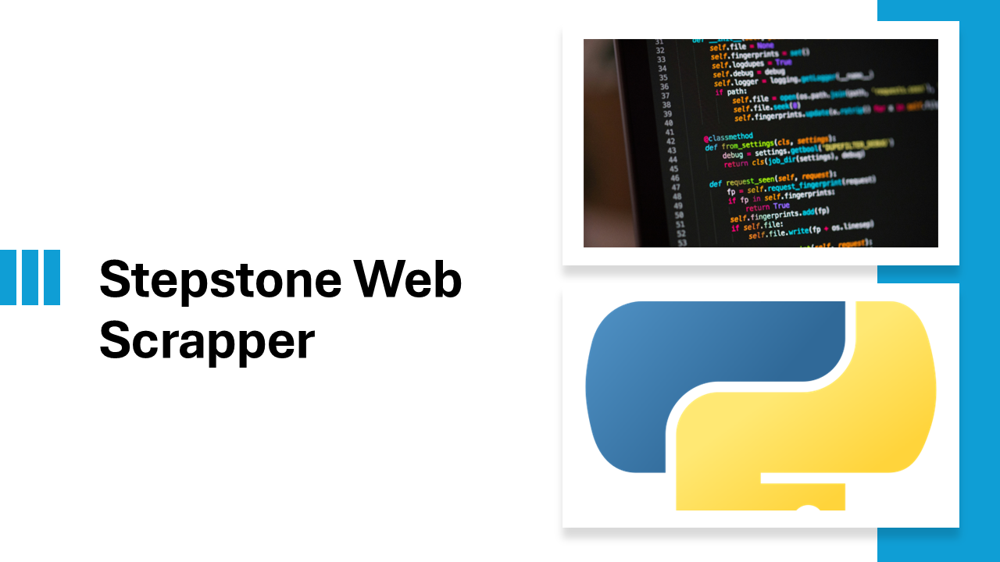

While working on a project, I needed to web scrape data from websites. Before targeting the actual website, I practiced on a similar one — StepStone. Here’s how I did it, so you can too
Web scraping, web harvesting, or web data extraction is data scraping used for extracting data from websites. Web scraping software may directly access the World Wide Web using the Hypertext Transfer Protocol or a web browser. While web scraping can be done manually by a software user, the term typically refers to automated processes implemented using a bot or web crawler. It is a form of copying in which specific data is gathered and copied from the web, typically into a central local database or spreadsheet, for later retrieval or analysis.
Web Scraping is a cost-efficient way to get the Unique Dataset directly from the website. Many advanced paid scrapers and APIs can be used to get the details. Using Python to scrape data and create your own dataset is incredibly rewarding for any data enthusiast.
The most popular way of scraping the website is using BeautifulSoup and Requests Libraries writing a python script. But that won't work on a dynamic website where there is JavaScript-heavy content. Here comes Selenium, which can be used for scraping the JavaScript-heavy websites. Other widely used Libraries are Playwright and Scrapy preferred for large projects.
Stepstone is mostly Javascript rendered, and we can use Selenium to get the visible contents on the website. We’re interested in extracting the salary details of each job and additional relevant features
When we are searching the keyword and the city or blank. We are getting the details like “Job Title”, “Company Name,” “City,” etc. We can get more details in a specific tab if we click the Jobs tab. So it's like humans interacting with the website. To make this happen, we need to use Selenium. Selenium gives the website a Human feeling. It can be used to click the link, select the drop-down and move through the tabs, etc.